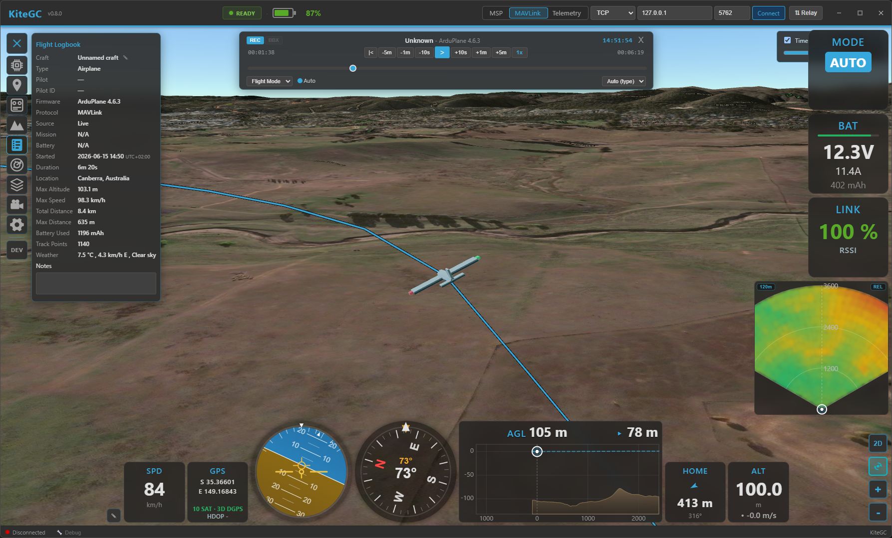

Home


Kite Ground Control (Kite GC) is a modern, cross-platform ground control station for INAV, ArduPilot, and PX4 aircraft — planes, multirotors, VTOL, helicopters, rovers and boats. It combines everything you expect from a GCS with a fast, intuitive interface and a few things you won't find anywhere else — like a full 3D flight view, a fleet & battery manager, and live video right next to the map.

Kite Ground Control flying in 3D mode.
Highlights¶
-
Immersive 3D flight view
A full 3D globe with real terrain, your aircraft and track in 3D, a 3D mission overlay, an FPV cockpit camera, and real-time day/night lighting — switch between 2D and 3D seamlessly.
-
One GCS for INAV, ArduPilot & PX4
Plan, fly, and log across all three autopilots with a consistent interface — including passive (listen-only) and relay link modes.
-
Fleet, Battery & Mission managers
Keep a library of your aircraft and batteries with full build sheets and lifetime stats, and a reusable mission library — all linked to your flight log.
-
Fast & intuitive
A performance-oriented interface with dockable widgets and panels that remembers your layout, so the focus stays on flying.
Supported setups¶
- Autopilots: INAV (7.0+), ArduPilot, and PX4.
- Aircraft: fixed-wing, flying-wing, VTOL, multirotor, helicopter, rover, boat.
- Connections: USB / serial, Bluetooth (SPP & BLE), TCP, and UDP.
- Link modes: live control link, passive listen-only telemetry, or a relay that re-broadcasts to other ground stations.
The essentials¶
Everything you'd expect from a ground station:
- Live telemetry & HUD — attitude, altitude, speed (incl. airspeed), a compass with wind and ground-track indicators, GPS/sensor health, link quality, and flight-mode display.
- Customisable widget dashboard — drag-and-drop flight widgets docked to the side and bottom.
- 2D moving map — your aircraft, track, home and mission, with heading-up mode and day/night shading.
- Mission planning — create, upload, download and edit missions; undo/redo; survey-pattern generator; terrain-following / AGL waypoints.
- Vehicle control — arm/disarm, flight-mode changes, takeoff/RTL/loiter and more (ArduPilot/PX4).
- Comfort — a multi-language interface (English, German, French, Chinese and Bulgarian; more community translations welcome) and persistent window, layout and settings between sessions.
What makes Kite special¶
- Full 3D mode — Cesium 3D globe with real terrain, a unified 3D mission overlay, an FPV cockpit camera with a conformal HUD, and live day/night lighting.
- Terrain awareness — AGL (above-ground) waypoints, a terrain-profile analysis for your mission, and live terrain radar / AGL widgets in flight.
- Flight Logbook — a full flight logbook no other GCS offers: automatic recording with replay,
plus import of INAV blackbox, ArduPilot Dataflash, MAVLink
.tlog, and MWPTools-compatible raw-MSP logs — unified into one searchable flight history. - Fleet (Vehicle) Manager — a build sheet per aircraft (airframe, propulsion, FC, sensors, photo)
with lifetime statistics and records, auto-linked to your flights; export/import as
.kvehicle. - Battery Manager — track each pack by serial: cycles, lifetime usage and health, with
.kbattexport/import. - Mission Manager — a searchable mission library shared across autopilots.
- Safety suite — geofences (ArduPilot/PX4), geozones (INAV), safe-home & fixed-wing autoland, airspace overlays (airports, controlled airspace, obstacles), and foreign-vehicle radar with ADS-B proximity & conflict alerts.
- Live video — low-latency RTSP video shown alongside (or behind) the map, with one-click map ⇄ video swapping.
- Telemetry relay — re-encode and forward live telemetry to other ground stations, handsets, or an antenna tracker.
- RC control — fly from the GCS with a gamepad/joystick (HID).
- RF link analysis — visualise signal quality to find the best antenna setup.
Where to start¶
- New here? Begin with Installation, then your first connection and the quick tour.
- Having trouble connecting? See Troubleshooting → Connection.
Kite GC is free, open-source software (GPL-3.0-or-later).